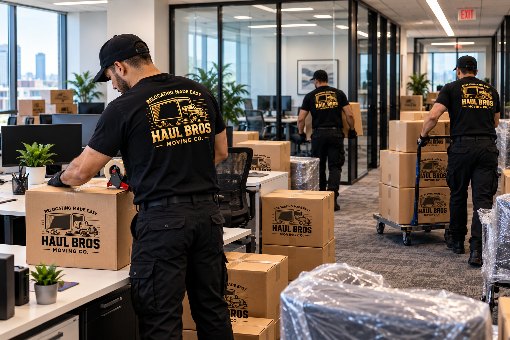

Moving your business to a new location is an exciting opportunity for growth, expansion, and improved operations. However, unlike a residential move, a commercial relocation requires careful planning, coordination, equipment protection, and an efficient moving strategy to minimize business interruptions.
Whether you're relocating a small office in Woodbridge, moving a retail store in Fairfax, transferring office furniture in Alexandria, or expanding your operations in Arlington, choosing the right commercial moving company can make a significant difference.
At Haul Bros Moving Co LLC, we understand that time is money for small business owners. Our goal is simple: provide professional, reliable, affordable, and efficient commercial moving services while helping businesses minimize downtime.
This comprehensive guide explains everything small business owners need to know about planning a successful commercial move in Northern Virginia and the greater Washington, DC metropolitan area.
Quick Answer: What Is the Best Way to Move a Small Business?
The best way to relocate a small business is to begin planning four to eight weeks before the move when possible, create a detailed inventory, assign a relocation coordinator, hire an appropriately equipped commercial moving company, and schedule the move around your business operations.
For a successful office relocation:
- Establish your moving budget and timeline.
- Create an inventory of furniture, equipment, and supplies.
- Identify items requiring special handling.
- Request a detailed commercial moving estimate.
- Coordinate building access, elevators, loading docks, and parking.
- Back up business data and arrange IT services.
- Label furniture, boxes, and workstations.
- Schedule the move to reduce operational disruption.
- Inspect and organize the new workspace.
- Test critical business systems before reopening.
Haul Bros Moving Co LLC provides commercial moving services throughout Northern Virginia, Washington, DC, and surrounding Maryland communities.
Website: www.haulbrosmoving.com Phone: (571) 899-1919 Email: info@haulbrosmoving.com
1. What Is Commercial Moving?
Commercial moving is the professional relocation of business furniture, equipment, inventory, supplies, and other workplace belongings from one location to another.
Unlike residential moving, commercial relocation often involves strict deadlines, shared buildings, specialized equipment, operational continuity, and coordination with property managers.
Common Types of Commercial Moves
Small Office Relocation
Moving desks, chairs, filing cabinets, conference tables, shelving, computers, and general office supplies between business locations.
Retail Store Moving
Relocating display fixtures, merchandise, shelving, counters, stockroom supplies, and store furniture.
Professional Office Moving
Supporting relocations for law offices, accounting firms, real estate agencies, insurance offices, consulting companies, and administrative businesses.
Medical and Dental Office Furniture Moving
Transporting ordinary office furniture, waiting room seating, cabinets, and nonclinical equipment. Specialized medical equipment may require dedicated handling arrangements.
Restaurant and Hospitality Furniture Moving
Moving tables, chairs, storage fixtures, and qualifying commercial furniture or appliances after assessing dimensions, weight, access, and equipment requirements.
Warehouse and Storage Relocation
Moving boxed inventory, shelving, supplies, and other approved business contents between commercial spaces or storage facilities.
Internal Office Moving
Rearranging desks, moving departments between floors, relocating furniture within a building, or preparing a workspace for renovation.
Not every commercial relocation requires a full-service office move. Some businesses simply need two or three experienced movers to relocate heavy furniture or unload a delivery.
Haul Bros Moving Co LLC offers flexible moving solutions based on the actual needs of each business.
2. Why Hiring Professional Commercial Movers Matters
Small business owners often consider moving their offices themselves to reduce expenses.
However, a poorly organized business relocation can create unexpected costs through employee downtime, damaged equipment, interrupted services, and delayed reopening.
Reduced Business Downtime
Professional movers can help streamline the physical relocation process by coordinating loading, transportation, unloading, and furniture placement.
The goal is to get your business operational again as quickly as practical.
Protection for Office Furniture
Office furniture frequently includes heavy desks, glass tables, filing cabinets, bookcases, and conference furniture.
Haul Bros Moving Co LLC uses appropriate moving equipment and protective materials, including moving blankets, shrink wrap, dollies, and floor protection.
Less Physical Work for Employees
Your employees should not have to risk injury moving heavy office furniture.
A professional moving crew can handle the physical work while your staff focuses on business operations, customer communication, and preparing the new office.
Better Organization
An organized commercial move helps ensure that furniture and labeled boxes reach their intended rooms or departments.
Flexible Moving Solutions
A small business may need:
- A moving crew and truck.
- Labor-only loading or unloading.
- Office furniture disassembly and reassembly.
- Packing and unpacking assistance.
- Heavy furniture relocation.
- Internal office rearrangement.
- Commercial storage-related moving assistance.
The right solution depends on the inventory, building conditions, and relocation timeline.
3. How Much Does a Small Business Move Cost in Northern Virginia?
One of the most common questions small business owners ask is:
“How much does it cost to hire commercial movers near me?”
The cost depends on the number of movers, size of the office, amount of furniture, travel distance, accessibility, and total time required.
Haul Bros Moving Co LLC Moving Rates
The following are our standard moving crew rates, which can serve as a starting point for eligible small commercial moves. Larger or specialized commercial projects may require a customized estimate.
| Moving Crew | First 2 Hours | Each Additional Hour |
|---|---|---|
| 2 Movers + Moving Truck | $395 | $159 |
| 3 Movers + Moving Truck | $495 | $189 |
| 4 Movers + Moving Truck | $695 | $249 |
| 2 Movers, Labor Only | $295 | $115 |
Important: These rates are subject to confirmation based on the specific project, inventory, travel requirements, and service needs. The standard minimum booking is two hours.
Example: Small Office Relocation
Imagine a small business in Woodbridge, VA, moving to a nearby office in Lake Ridge.
The business has:
- Five office desks.
- Five office chairs.
- Two filing cabinets.
- One conference table.
- Several bookshelves.
- Approximately 20–30 moving boxes.
If the move qualifies for the standard three-mover rate and takes four hours:
First two hours: $495 Two additional hours: $378
Estimated total: $873
This is an illustrative calculation, not a guaranteed quote or duration. The actual cost depends on the final inventory, building access, travel, and any specialized services.
What Affects Commercial Moving Costs?
Office Size: A two-person office generally requires less moving time than a workplace with 20 employees.
Furniture Quantity: Large conference tables, workstations, cabinets, and shelving increase the amount of handling required.
Building Access: Elevators, long hallways, loading docks, parking restrictions, and multiple floors affect the moving process.
Distance: Local office moves may have different transportation requirements from interstate business relocations.
Packing: Businesses that need assistance packing files, supplies, and equipment may require additional time and materials.
Specialty Items: Heavy commercial appliances, sensitive equipment, oversized furniture, and unusually valuable items require individual assessment.
Does Haul Bros Charge Hidden Moving Fees?
Haul Bros Moving Co LLC emphasizes transparent pricing.
Our standard moving services include the moving crew, truck when selected, moving blankets, shrink wrap, dollies, basic floor protection, and applicable furniture disassembly and reassembly.
We do not impose separate standard fees simply for stairs, elevators, fuel, or routine moving equipment.
Any specialized services, additional packing materials, or project-specific requirements should be clearly discussed in the written estimate before booking.

4. The Complete Small Business Moving Checklist
A successful commercial relocation begins long before moving day.
Use this practical checklist to organize your office move.
6–8 Weeks Before Moving
- Confirm the new business location.
- Review your current lease and move-out obligations.
- Determine your preferred moving date.
- Establish a relocation budget.
- Assign one employee as the moving coordinator.
- Create an inventory of furniture and equipment.
- Research commercial moving companies.
- Schedule a walkthrough or virtual moving assessment.
- Identify any special building requirements.
3–4 Weeks Before Moving
- Confirm your moving company and crew requirements.
- Notify employees about the relocation.
- Contact your internet and telephone providers.
- Coordinate with your IT team or vendor.
- Reserve loading docks and service elevators.
- Check building insurance and certificate-of-insurance requirements.
- Order boxes, labels, and packing materials.
- Decide which furniture will be moved, sold, donated, or discarded.
1–2 Weeks Before Moving
- Pack nonessential office supplies.
- Label boxes by department and destination.
- Back up important business data.
- Confirm the new office's internet installation.
- Update customers and vendors about the move.
- Prepare a floor plan for the new location.
- Confirm parking and building access.
- Review the final moving inventory.
1–2 Days Before Moving
- Secure confidential documents.
- Disconnect approved office equipment.
- Remove personal belongings from desks.
- Empty and prepare cabinets for transport.
- Photograph furniture and equipment conditions.
- Confirm the moving crew's arrival window.
- Verify someone will be available at both locations.
Moving Day
- Meet the moving crew at the scheduled arrival window.
- Review the inventory and moving plan.
- Identify fragile or high-priority items.
- Keep important keys, records, and access credentials secure.
- Direct movers to the correct rooms.
- Complete a final walkthrough of the old office.
- Inspect furniture and delivered items at the new location.
After Moving
- Reconnect computers, phones, and internet.
- Check essential business systems.
- Confirm inventory and furniture placement.
- Update business addresses online.
- Notify customers that your new office is operational.
- Report any moving concerns promptly.
5. How to Minimize Business Downtime During an Office Move
For most businesses, lost productivity can be more expensive than the moving service itself.
An effective relocation plan should prioritize continuity.
Schedule Around Your Business Hours
Depending on crew availability, consider scheduling your move during a slower business period, before a planned closure, or around your normal operating hours.
Move Nonessential Items First
Decorations, unused furniture, archived files, and extra supplies can often be packed before essential workstations.
Coordinate Your IT Transition
Computer networks, business phones, payment systems, servers, and internet services should be addressed before moving day.
Haul Bros can assist with the physical movement of approved office furniture and equipment, but specialized network disconnection, reconnection, and system configuration should be handled by qualified IT personnel.
Label Everything Clearly
Use a consistent labeling system:
Example:
BOX 12 — ACCOUNTING — NEW OFFICE ROOM 204
This helps movers place items in the appropriate location and makes unpacking more efficient.
Prepare the New Location
Before the truck arrives, confirm that the office is accessible, elevators are available, utilities are active, and the new floor plan is ready.
6. Commercial Moving Services Offered by Haul Bros Moving Co LLC
At Haul Bros Moving Co LLC, we believe small businesses deserve the same professional attention as large corporate relocations.
Our services can be customized for different office sizes, industries, and budgets.
Office Furniture Moving
We transport desks, office chairs, conference tables, filing cabinets, bookshelves, and other approved workplace furniture.
Commercial Packing and Unpacking
We can help pack general office supplies, boxed records, and other approved business contents using an organized process.
Sensitive records and confidential materials should be secured according to your company's own data-protection procedures.
Furniture Disassembly and Reassembly
Our crews can disassemble and reassemble qualifying desks, tables, and furniture to help facilitate transportation.
Labor-Only Commercial Moving
Already have a rental truck, moving container, or delivery vehicle?
Our labor-only moving service can assist with loading, unloading, and furniture placement.
Commercial Storage Moves
We help businesses transport furniture, boxes, and supplies to or from storage facilities.
Internal Office Relocation
Moving furniture from one room to another or reorganizing an existing workspace?
We also assist with internal furniture relocation without requiring a move to a new address.
Specialty Commercial Items
Certain heavy furniture, commercial refrigerators, oversized tables, and other specialty items may be handled following an assessment of weight, access, equipment, and safety requirements.
7. Commercial Moving Services Throughout Northern Virginia
Haul Bros Moving Co LLC is based in the Woodbridge area and serves businesses across Northern Virginia, Washington, DC, and surrounding Maryland communities.
Commercial Movers in Woodbridge, VA
Woodbridge businesses relocating within ZIP codes 22191, 22192, and 22193 can contact Haul Bros for office furniture moving, local commercial relocation, and labor-only assistance.
We also serve nearby Dale City, Lake Ridge, Occoquan, and Dumfries.
Office Movers in Fairfax, VA
Businesses in Fairfax may need assistance relocating professional offices, administrative workplaces, and retail furniture.
We provide moving services for eligible projects in Fairfax and surrounding communities.
Commercial Movers in Alexandria, VA
Alexandria office relocations can require coordination with building managers, parking restrictions, service elevators, and loading zones.
Haul Bros helps customers plan these logistical details before moving day.
Business Relocation in Arlington, VA
Arlington commercial moves may involve multistory office buildings, controlled loading docks, and scheduled elevator access.
We work with customers to understand these requirements and prepare an appropriate moving plan.
Office Movers in Manassas, VA
From small administrative offices to furniture and storage relocations, we assist Manassas businesses with commercial moving needs.
Commercial Moving in Stafford and Fredericksburg, VA
Businesses in Stafford, Fredericksburg, and surrounding areas can request office moving, commercial furniture transport, and customized relocation estimates.
Additional Service Areas
Our broader service area includes:
Prince William County: Woodbridge, Dale City, Lake Ridge, Dumfries, Triangle, Occoquan, Manassas, Gainesville, Haymarket, and Bristow.
Fairfax County: Fairfax, Springfield, Burke, Lorton, Annandale, Centreville, Chantilly, McLean, Tysons, Vienna, Reston, and Herndon.
Loudoun County: Ashburn, Sterling, and surrounding communities.
Additional Virginia Markets: Arlington, Alexandria, Falls Church, Stafford, and Fredericksburg.
Washington, DC: Commercial relocation services for eligible moves in the District.
Maryland: Bethesda, Rockville, Silver Spring, Gaithersburg, Germantown, College Park, and nearby service areas.
Whether you're searching for commercial movers near Woodbridge, office movers in Fairfax, or small business moving services in Northern Virginia, Haul Bros Moving Co LLC can help you plan your relocation.
8. How to Choose the Right Commercial Moving Company
Not every moving company is equally suited for business relocations.
Before hiring a commercial mover, ask these questions.
Is the Company Properly Licensed and Insured?
Verify that the mover has the appropriate operating authority for your particular move and ask for relevant insurance documentation.
Haul Bros Moving Co LLC operates under USDOT #4497497. Customers can request applicable insurance information and discuss building certificate-of-insurance requirements.
Does the Company Provide Written Estimates?
A professional estimate should clearly explain the moving services, pricing structure, crew size, and any relevant conditions.
Does the Company Have Appropriate Equipment?
Ask whether the company has the right truck, dollies, protective materials, and handling equipment for your furniture and building access.
Can the Movers Handle Your Specific Inventory?
A standard office move is different from relocating industrial machinery, laboratory equipment, or highly sensitive electronics.
Discuss specialty items before booking.
Will the Company Explain Its Damage Coverage?
Ask what valuation protection applies, what limitations exist, and whether additional protection is available.
Does the Company Understand Building Requirements?
Confirm whether the mover can coordinate around elevator reservations, loading docks, building access, and insurance documentation.
Choosing a mover based on price alone may not be the best decision. Reliability, clear communication, and preparation also matter.
9. Common Commercial Moving Mistakes Small Businesses Should Avoid
Mistake 1: Waiting Until the Last Minute
Commercial moves often require building approvals, elevator reservations, and IT scheduling.
Solution: Begin planning early and secure your preferred moving date.
Mistake 2: Underestimating the Inventory
Forgetting storage closets, cabinets, breakroom furniture, or archived files can lead to inaccurate estimates.
Solution: Complete a detailed inventory or request a virtual assessment.
Mistake 3: Not Preparing the New Office
Movers may be ready to unload while the destination building is inaccessible.
Solution: Confirm keys, parking, elevators, and room assignments before moving day.
Mistake 4: Ignoring Data Security
Business records, employee information, and confidential customer documents need proper handling.
Solution: Secure sensitive materials and assign responsibility for their custody.
Mistake 5: Choosing the Wrong Crew Size
Too few movers may increase the total time required, while an unnecessarily large crew may not be cost-effective.
Solution: Ask your moving company to recommend a crew based on the inventory and access conditions.
Mistake 6: Failing to Update Business Information
Customers may visit the old address or struggle to find your new location.
Solution: Update your website, Google Business Profile, online directories, customer communications, and other relevant business records.
10. Commercial Moving vs. Labor-Only Moving: Which Is Better?
Some businesses need complete transportation services. Others only need professional labor.
| Service | Full Commercial Moving | Labor-Only Moving |
|---|---|---|
| Professional movers | Yes | Yes |
| Moving truck supplied | Yes | No |
| Loading and unloading | Yes | Yes |
| Transportation | Yes | Customer arranges |
| Office furniture handling | Yes | Yes |
| Best for | Complete relocations | Rental trucks, containers, internal moves |
For businesses moving between two separate offices, a crew with a truck is often the more convenient option.
For businesses receiving office furniture deliveries, rearranging workspaces, or unloading a rented truck, labor-only moving may be more economical.
Haul Bros Moving Co LLC offers both options.
11. How to Prepare Office Furniture for Moving
Proper preparation helps make the moving process safer and more efficient.
Desks: Remove loose supplies, personal belongings, and items stored in drawers.
Filing Cabinets: Secure documents and discuss whether cabinets must be emptied before transport.
Conference Tables: Identify removable sections and communicate if the tabletop contains glass, stone, or other fragile materials.
Computers: Back up files, disconnect cables, and label each workstation. Have qualified personnel handle specialized IT systems.
Office Chairs: Remove loose accessories and identify damaged or unstable parts.
Shelving: Remove books, supplies, and loose shelves where appropriate.
Commercial Appliances: Confirm dimensions, weight, utility disconnection requirements, and safe access before moving day.
A properly prepared inventory can reduce unnecessary handling and improve the overall relocation process.
12. Why Small Businesses Choose Haul Bros Moving Co LLC
When relocating your business, you need a moving company that respects your time, property, budget, and schedule.
Haul Bros Moving Co LLC focuses on practical moving solutions and transparent communication.
Transparent Pricing
We explain our standard moving rates and discuss project-specific requirements before scheduling.
Flexible Crew Options
We offer two-, three-, and four-mover options for qualifying projects, with customized arrangements available for larger commercial moves.
Professional Moving Equipment
Our moving services include standard protective equipment such as blankets, shrink wrap, dollies, and floor protection.
Furniture Disassembly and Reassembly
Applicable furniture disassembly and reassembly are included in our standard moving services.
Local Northern Virginia Service
Our Woodbridge-area base allows us to serve businesses throughout Prince William County, Fairfax County, Stafford County, Arlington, Alexandria, and surrounding areas.
Residential and Commercial Moving Experience
Our services cover both household and workplace relocations, including office furniture, storage moves, and specialty-item transportation.
Customer-Focused Communication
We emphasize clear scheduling, professional service, and responsive communication from the initial estimate through completion.
Our mission: Relocating made easy.
13. Frequently Asked Questions About Commercial Moving in Northern Virginia
These questions address common concerns small business owners have when planning office relocations.
1. How much do commercial movers cost in Northern Virginia?
Commercial moving costs depend on crew size, inventory, distance, accessibility, and time. Haul Bros Moving Co LLC's standard two-mover-and-truck rate starts at $395 for the first two hours, with additional time at $159 per hour for qualifying moves. Larger commercial projects may require custom pricing.
2. How far in advance should I book office movers?
Booking four to eight weeks ahead is a useful planning target, especially for larger moves or buildings requiring advance reservations. Smaller office moves may be arranged on shorter notice, depending on availability.
3. Can I move my small business over the weekend?
Weekend commercial moves may be possible depending on scheduling and building access. Contact Haul Bros to confirm availability for your preferred date.
4. How long does it take to move a small office?
A small office relocation may take several hours, while larger workplaces can require a full day or multiple phases. The timeline depends on the inventory, travel distance, elevators, loading access, and preparation.
5. Do commercial movers disassemble and reassemble office furniture?
Yes. Haul Bros provides disassembly and reassembly of qualifying office furniture as part of its standard moving services. Specialized modular systems may require additional assessment.
6. Can movers transport computers and office electronics?
Professional movers can transport appropriately prepared and packed office electronics. Sensitive systems, servers, and networking equipment may require specialized IT handling and additional protection.
7. Do I need to empty filing cabinets before moving?
Often, yes. Emptying heavy filing cabinets can reduce weight and handling risks. Your moving crew can advise based on the cabinet type, contents, and access conditions.
8. Do commercial moving companies provide packing services?
Many do. Haul Bros offers packing and unpacking assistance for qualifying business contents. Packing materials and additional services should be included in the estimate.
9. Can movers relocate furniture within the same office building?
Yes. Haul Bros offers internal furniture relocation and labor-only moving assistance for businesses reorganizing offices, changing floors, or preparing for renovations.
10. Do I need to reserve an elevator for my office move?
If your commercial building requires reservations for moving or deliveries, you should coordinate with property management before moving day.
11. Can Haul Bros move a business from Virginia to Maryland or Washington, DC?
Haul Bros serves the greater DMV area. Interstate moves are subject to applicable operating authority and project requirements, which should be verified before booking.
12. Are commercial moving services insured?
Haul Bros maintains business insurance and can discuss applicable documentation. Customers should review the actual insurance policies, valuation coverage, exclusions, and building requirements before the move.
13. What if my business has heavy furniture or commercial refrigerators?
Heavy or oversized commercial items should be reviewed individually. Share photographs, dimensions, estimated weights, and access details so the company can determine appropriate equipment and crew requirements.
14. Do commercial movers charge extra for stairs or elevators?
Haul Bros does not charge separate standard stair or elevator fees. However, stairs, elevators, and long walking distances can affect the time required to complete an hourly move.
15. Can I get a flat-rate commercial moving quote?
Custom flat-rate estimates may be available after reviewing the inventory, locations, access conditions, and service requirements. Ask Haul Bros whether a flat-rate proposal is appropriate for your project.
16. Is there a minimum number of hours for commercial moving?
Haul Bros generally has a two-hour minimum for standard moving services. Customized commercial projects may have different requirements.
17. How can I reduce the cost of my office move?
Declutter unused furniture, pack nonessential supplies in advance, label boxes clearly, reserve building access, and provide an accurate inventory. Good preparation can reduce delays and unnecessary moving time.
18. Can movers help relocate a retail store?
Yes. Many retail furniture and inventory moves can be accommodated after reviewing the items, access conditions, and transportation requirements.
19. How do I book commercial movers in Woodbridge, VA?
Contact Haul Bros Moving Co LLC at (571) 899-1919 or info@haulbrosmoving.com. Provide your moving date, pickup and delivery locations, office size, inventory, and any special building requirements.
20. What is the best commercial moving company for a small business in Northern Virginia?
The best company for your move is one with appropriate licensing, relevant experience, clear pricing, suitable equipment, and the ability to meet your schedule and inventory requirements. Haul Bros Moving Co LLC is an option for small businesses seeking local commercial moving services in Northern Virginia and the surrounding DMV area.
14. Request a Free Commercial Moving Estimate in Northern Virginia
Planning to relocate your office, retail store, workspace, or small business?
Haul Bros Moving Co LLC is ready to help you evaluate your moving needs and develop an organized relocation plan.
Whether you're moving a small office across Woodbridge, relocating furniture from Fairfax to Alexandria, or planning a larger business move in Northern Virginia, our team can discuss crew options, scheduling, and pricing.
Contact Haul Bros Moving Co LLC
Haul Bros Moving Co LLC *Relocating made easy.*
Phone: (571) 899-1919 Email: info@haulbrosmoving.com Website: https://www.haulbrosmoving.com USDOT: 4497497
Primary Service Area: Woodbridge, Prince William County, Fairfax County, Stafford County, Arlington, Alexandria, Loudoun County, Washington, DC, and nearby Maryland communities.
What We Need for Your Commercial Moving Quote
To prepare an accurate estimate, please provide:
- Business name and contact information.
- Preferred moving date.
- Pickup and delivery addresses.
- Approximate office size or number of workstations.
- Furniture and equipment inventory.
- Stairs, elevators, or loading dock information.
- Packing, assembly, or specialty-item requirements.
- Any building access or scheduling restrictions.
Contact Haul Bros Moving Co LLC today to request your free commercial moving estimate and make your next business relocation easier.
Final Thoughts: Make Your Next Business Move Organized, Efficient, and Stress-Free
Moving a small business does not have to mean days of confusion, disorganization, or unnecessary interruptions.
With proper planning, an accurate inventory, a realistic timeline, and the right moving team, your company can transition to its next location more efficiently.
From office furniture relocation and commercial packing to labor-only assistance and complete business moving services, Haul Bros Moving Co LLC helps Northern Virginia businesses plan practical moving solutions.
If you're searching for affordable commercial movers in Northern Virginia, reliable office movers in Woodbridge, or professional small business relocation services near Washington, DC, contact Haul Bros Moving Co LLC.
Haul Bros Moving Co LLC — Relocating made easy.